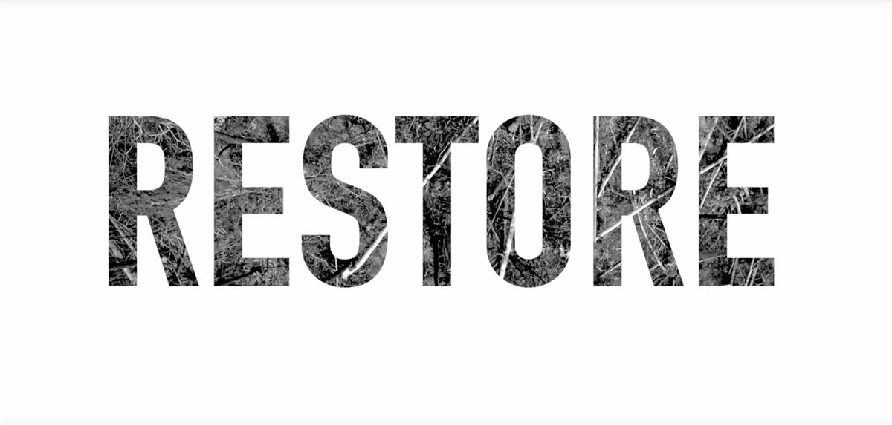

Greta Thunberg and George Monbiot make short film on climate crisis – video
Damian Carrington Environment editor @dpcarrington
Thu 19 Sep 2019 11.00 BST Last modified on Thu 19 Sep 2019 12.47 BST
Film by Swedish activist and Guardian journalist George Monbiot says nature must be used to repair broken climate
The protection and restoration of living ecosystems such as forests, mangroves and seagrass meadows can repair the planet’s broken climate but are being overlooked, Greta Thunberg and George Monbiot have warned in a new short film.
Natural climate solutions could remove huge amounts of carbon dioxide from the atmosphere as plants grow. But these methods receive only 2% of the funding spent on cutting emissions, say the climate activists.
Their call to protect, restore and fund natural climate solutions comes ahead of a global climate strike led by young people on Friday and a UN climate action summit of world leaders in New York on Monday. The film will be shown to heads of state and the UN’s climate and biodiversity chiefs in New York.
Restoring nature also helps protect people from the increasing extreme weather events the climate crisis is bringing, as trees help prevent flooding and mangroves protect coasts. Furthermore, the annihilation of wildlife that has resulted in animal populations falling by 60% since 1970 can be tackled be recreating lost habitat. However, it remains vital that fossil fuel burning is stopped if the climate emergency is to be ended.
“Right now, we are ignoring natural climate solutions,” said Thunberg. “We spend 1,000 times more on global fossil fuel subsidies than on nature-based solutions. This is your money, it is your taxes, and your savings.”
“Nature is a tool we can use to repair our broken climate,” said Monbiot, an author and Guardian journalist who founded a Natural Climate Solutions campaign earlier this year. “These solutions could make a massive difference, but only if we leave fossil fuels in the ground as well.”
Shyla Raghav from Conservation International, which helped fund the film, said: “The fact is, we simply will not succeed in avoiding climate breakdown without nature.”
Global carbon emissions must be halved in the next decade to avoid serious impacts from global heating, but they are still rising. It is therefore near certain that carbon dioxide will have to be removed from the atmosphere, and technology such as burying CO2 underground has not been demonstrated at scale.
In the film, Monbiot says: “There is a magic machine that sucks carbon out of the air, costs very little, and builds itself. It’s called a tree.” A recent scientific analysis concluded that growing billions of trees across the world is the single biggest and cheapest way to tackle the climate crisis, though coal, oil and gas burning must also end.
“We are living in the beginning of a mass extinction and our climate is breaking down,” says Thunberg in the film. “But we can still fix this – you can still fix this.”
“It’s simple,” she says. “We need to protect, restore, and fund.” That means protecting tropical forests that are being cut down at the rate of 30 football pitches a minute, she said, restoring the large areas of the planet that have been damaged and stopping the funding of things that destroy nature and instead paying for activities that help it.
The film’s producer, Tom Mustill of Gripping Films, said: “We tried to make the film have the tiniest environmental impact possible. We took trains to Sweden to interview Greta, charged our hybrid car at George’s house, used green energy to power the edit and recycled archive footage rather than shooting new.”
SOURCE: THE GUARDIAN

